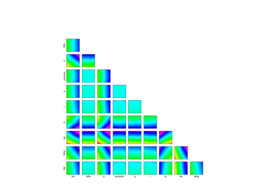

WingWeightModel¶
- class WingWeightModel¶
Data class for the Wing weight model.
Examples
>>> from openturns.usecases import wingweight_function >>> # Load the Wing weight model >>> ww = wingweight_function.WingWeightModel()
- Attributes:
- dimThe dimension of the problem
dim = 10
- SwWing area (ft^2),
Uniformdistribution First marginal, ot.Uniform(150, 200)
- WfwWeight of fuel in the wing (lb),
Uniformdistribution Second marginal, ot.Uniform(220, 300)
- AAspect ratio (-),
Uniformdistribution Third marginal, ot.Uniform(6, 10)
- LambdaQuarter chord sweep (deg),
Uniformdistribution Fourth marginal, ot.Uniform(-10, 10)
- qDynamic pressure at cruise (lb/ft^2),
Uniformdistribution Fifth marginal, ot.Uniform(16, 45 )
- lTaper ratio (-),
Uniformdistribution Sixth marginal, ot.Uniform(0.5, 1)
- tcAirfoil thickness to chord ratio (-),
Uniformdistribution Seventh marginal, ot.Uniform(0.08, 0.18)
- NzUltimate load factor (-),
Uniformdistribution Eighth marginal, ot.Uniform(2.5, 6)
- WdgFlight design gross weight (lb),
Uniformdistribution Nineth marginal, ot.Uniform(1700, 2500)
- WpPaint weight (lb/ft^2),
Uniformdistribution Tenth marginal, ot.Uniform(0.025, 0.08)
- distributionX
ComposedDistribution The joint distribution of the input parameters.
- model
PythonFunction The Wing weight model with Sw, Wfw, A, Lambda, q, l, tc, Nz, Wdg and Wp as variables.
- __init__()¶
Examples using the class¶

Example of sensitivity analyses on the wing weight model
Example of sensitivity analyses on the wing weight model